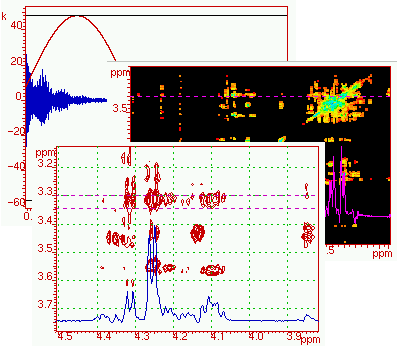

ProSpectND User Manual

INDEX
Introduction
Menus
Command Line
Open and Read Files
1D Files
2D Files
Plot to paper
Scripts
Script Processing
Operators
Strings
Arrays
File I/O
User defined Functions
NMR Commands
Plotting
Simulation
Line fitting
Display
Plot 2D spectrum in 3D
(1998) Albert van Kuik